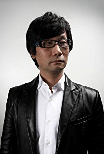

Hideo Kojima
 Hideo Kojima urodził się 24 sierpnia 1963 roku w tokijskiej dzielnicy Setagaya. Kiedy był małym dzieckiem, z rodziną przeprowadził się na krótko do małego miasta Shirasaki, z którego po niedługim czasie przenieśli się do miasta Kawanishi w rejonie Kansai. Kojima twierdzi, że w dzieciństwie dużo czasu spędzał samotnie, oglądając telewizję i zajmując się sobą po powrocie ze szkoły.
Pozostawanie sam na sam w domu i izolacja odbiły się na jego charakterze, gdyż jak twierdzi: "[kiedykolwiek] podróżuję i zostaję w hotelu, włączam telewizor zaraz jak wejdę do pokoju, by zająć się ze swoim uczuciem osamotnienia"
Pierwotnie chciał zostać artystą lub ilustratorem, ale często zniechęcał się do tego przez japońskie normy społeczne, w których preferowało się szukanie bezpiecznych i dobrze płatnych prac. Zniechęcenie powodowało również u niego świadomość problemów finansowych jego wujka, który był artystą.